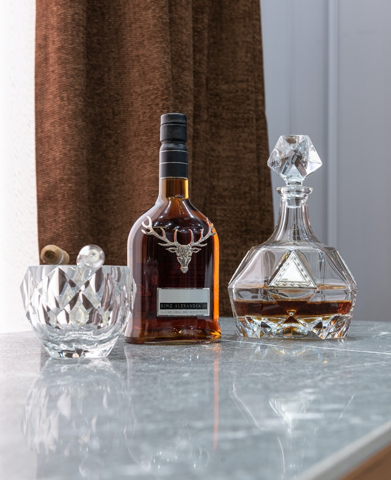

WHISKY

BLEND
- Antiquary Red 700 ml
- Ballantines 1 L
- Ballantines 7 años 700 ml
- Ballantines 12 años 750 ml
- Chivas 12 años 750 ml
- Chivas Extra 13 años 750 ml
- Chivas 15 años 750 ml
- Chivas 18 años 750 ml
- Chivas Royal Salute 21 años 700 ml
- Famous Grouse 750 ml
- J&B 750 ml
- Johnnie Walker Red Icon 700 ml
- Johnnie Walker Red 1 L (Sin estuche)
- Johnnie Walker Double Black 750 ml
- Johnnie Walker Swing 750 ml
- Johnnie Walker Gold Reserve 750 ml
- Johnnie Walker Green 15 años 750 ml
- Johnnie Walker 18 años 750 ml
- Johnnie Walker XR 21 años 750 ml
- Old Parr 12 años 750 ml
- Sir Edwards 700 ml
- Sir Edwards Beer Reserve 700 ml
- White & Mackay 700 ml
SINGLE MALT
- Bruichladdich Classic Laddie 700 ml
- Cardhu 12 años 700 ml
- Glenfiddich 12 años 750 ml
- Glenfiddich 15 años 750 ml
- Glenfiddich 18 años 750 ml
- Glen Moray Classic 700 ml
- Glen Moray Port Cask Finish 700 ml
- Glen Moray Sherry Cask Finish 700 ml
- Glen Moray Heritage 12 años 700 ml
- Highland Park 700 ml
- Jura Superstition 700 ml
- Scapa Glansa 750 ml
- Singleton 12 años 700 ml
- Singleton 15 años 700 ml
- The Chita Single Grain 700 ml
- The Dalmore 15 años 700 ml
- The Glenlivet Founders Reserve 750 ml
- The Glenlivet 12 años 700 ml
- The Glenrothes 10 años 700 ml
- The Glenrothes 12 años 700 ml
- The Macallan Triple Cask 12 años 700 ml
- The Macallan Double Cask 12 años 700 ml
- The Macallan Sherry Oak 12 años 700 ml
AMERICAN WHISKEY
- Bulleit 700 ml
- Gentleman Jack 1 L
- Jack Daniel´s 750 ml
- Jack Daniel´s 1 L
- Jim Beam 1 L
- Jim Beam Black 750 ml
- Wild Turkey 40º 750 ml
- Woodford Reserve 750 ml
IRISH WHISKEY
- Jameson 750 ml
- Jameson Cask Ipa 750 ml
GIN
- Apostoles 700 ml
- Apostoles Rosa Mosqueta 700 ml
- Apostoles Fuerza Gaucha 750 ml
- Beefeater Pink 700 ml
- Beefeater 24 750 ml
- Bombay 750 ml
- Bosque 500 ml
- Bosque Alta montaña 500 ml
- Brighton 700 ml
- Broker´s 750 ml
- Buenos Aires 750 ml
- Covent Dry 750 ml
- D-1313 500 ml
- Damrak 700 ml
- Delirante 750 ml
- Fifty Pounds 700 ml
- Fifty Pounds Estuche Metalico 700 ml
- Heraclito Dry 750 ml
- Heraclito y Macedonio 750 ml
- Heredero 750 ml
- Hendrick´s 700 ml
- Larios 700 ml
- Larios Rose 700 ml
- Le Tribute 700 ml
- Mare 700 ml
- Martin Miller´s 700 ml
- Merle 750 ml
- Mom 700 ml
- Mom Rocks 700 ml
- Moretti Dry 750 ml
- Monkey 47 500 ml
- Nordes 700 ml
- Sorgin 750 ml
- Tanqueray 700 ml
- Tanqueray Sevilla 700 ml
- Tanqueray N° 10 1 L
- Terrier Old Tom 750 ml
- Terrier Pink 750 ml
- Terrier Wild 750 ml
- Wolfram 750 ml
VODKA
- Absolut 500 ml
- Absolut 750 ml
- Absolut Mango750 ml
- Absolut Apeach750 ml
- Absolut Mandarin750 ml
- Absolut Vainilla 750 ml
- Absolut Extrakt 750 ml
- Belvedere 700 ml
- Bulbash Abedul 500 ml
- Bulbash Arandanos 500 ml
- Bulbash Tilo y Miel 500 ml
- Bulbash 500 ml
- Danzka 750 ml
- Finlandia 750 ml
- Pan 750 ml
- Sernova Citrus 700 ml
- Sernova 700 ml
- Smirnoff 700 ml
RON
- Appleton Signature 750 ml
- Bacardi Oro 750 ml
- Flor de Caña 7 años Black 750 ml
- Havana 3 años 750 ml
- Santa Teresa Gran Reserva 5 años 750 ml
- Zacapa Ambar 12 años 750 ml
VARIOS
- Amarula 750 ml con vaso
- Angostura 200 ml
- Angostura Orange 100 ml
- Angostura Cacao 100 ml
- Aperol 750 ml
- Baileys 750 ml
- Baileys Salted Caramel 750 ml
- Campari 750 ml
- Carpano Rosso 1 L
- Christalino 700 ml
- Cinzano Rosso 1 L
- Cinzano Rosso 1757 1 L
- Cinzano Dry 1757 1 L
- Cointreau 700 ml
- Cointreau Noir 750 ml
- Cynar 750 ml
- Cynar 70 750 ml
- Fireball Cinnamon 750 ml
- Giovannoni Rosso 750 ml
- Grand Marnier 700 ml
- Jack Daniel´s Honey 750 ml
- Jägermeister Coolpack 350 ml
- Jägermeister 1,75 L
- Jim Beam Honey 750 ml
- Jose Cuervo Silver 750 ml
- Lunfa Rosado 750 ml
- Lunfa Rosso 750 ml
- Luxardo Triplum 750 ml
- Martini Extra Dry 1 L
- Pimm's 750 ml
- Wild Turkey Honey 750 ml